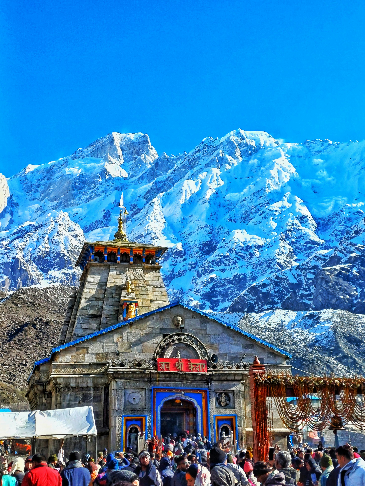

The Abode of Lord Shiva
Kedarnath is one of the twelve Jyotirlingas of Lord Shiva and is located in the Himalayas in Uttarakhand. It is a sacred pilgrimage site for Hindus and is surrounded by stunning mountains and glaciers.

The Kedarnath Temple is dedicated to Lord Shiva and is believed to have been built by the Pandavas. The temple is open from April/May to November due to extreme winter weather. Pilgrims trek several kilometers to reach the temple, making it a spiritually rewarding journey.
| Fact | Details |
|---|---|
| State | Uttarakhand |
| Altitude | 3,583 meters above sea level |
| Famous For | Kedarnath Temple, Himalayas, Pilgrimage |
| Best Time to Visit | May to November |